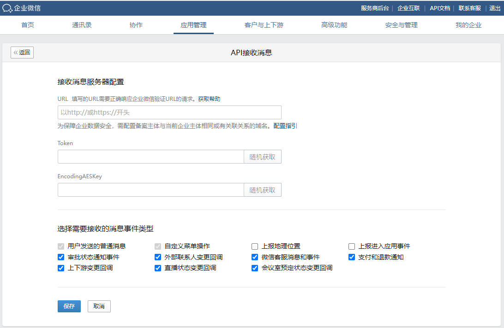

目录
企业可以通过获取成员的客户列表接口来获知成员添加了哪些客户，为了提高实时性，企业可在应用设置回调配置，成员添加和删除客户时将以事件的形式推送到指定URL，企业接收到外部联系人变更事件后，响应处理后即可保证获取到的企业客户列表是及时更新的列表。
配置在客户联系“可调用应用”列表的应用，设置了API接收消息，并且在“接收的消息事件类型”中勾选了“外部联系人变更回调”，则应用可见范围内的员工所添加的客户，相关的事件会回调给此应用。
接收外部联系人变更事件，实现方法与接收应用消息是一样的，请开发者仔细阅读“接收应用消息的说明”。

当开发者完成了接收消息与事件的开发，将企业微信回调的事件解密后，可以得到具体的变更事件。请开发者仔细阅读“事件格式”。